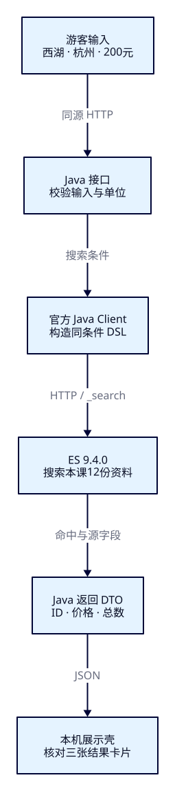
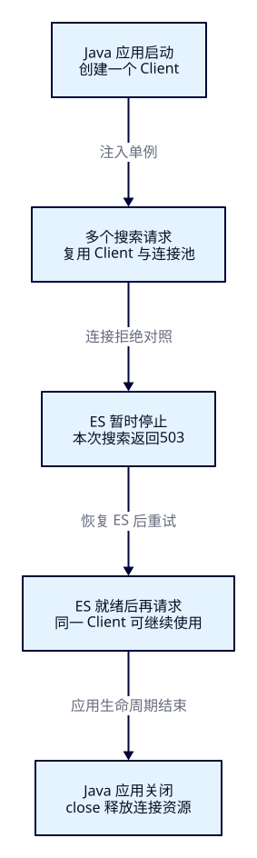

网站输入怎样
真正到达 ES？
F06 已能在终端找出杭州、200 元内、附近 3 公里且明确开放的“西湖”候选。现在游客在页面输入相同条件，怎样保证看到的卡片没有偷偷放宽预算，也没有把 ES 断线当成“没有景点”？本课把已理解的 DSL 接到一个最小 Java 服务，用同一批资料逐项核对请求、结果与错误。
本课目标
- 把游客输入映射为完整 bool 查询，解释 REST 与 Java 在名称、城市、预算、状态和距离上的一致性。
- 实际构建 Boot 4 / JDK 25 工程，核对接口和卡片中的 ID、价格、总数，并用缩减预算与空结果做对照。
- 区分 Java 进程启动、ES 连接和索引可用；解释单例客户端的复用/关闭，完成停机、恢复与清理后重做。
本课交付的本机展示壳是观察窗口，你直接启动使用，无需编写前端。Pages 仍只承载教程，不调用你的本机服务；真实链路是本机浏览器 → Java → ES。后面的多字段、高亮、聚合和分页尚未在本课实现。
本课使用独立索引 tut-f07-attractions，不把 F04–F06 的预测当作本课响应。ES / Java 两轮记录、教程阅读与展示壳记录分别核对实际执行范围；原课次受阻记录保留。
展开本课目录
1. 三段职责：谁理解搜索，谁负责显示
游客不需要知道索引名或 DSL，只表达“西湖、杭州、预算 200 元、附近 3 公里”。Java 接口把这组输入验证并转成搜索请求；ES 按字段与查询找出候选；Java 再从命中中取出卡片需要的资料。页面只提交条件和显示返回值，不能在浏览器自行过滤掉几条卡片，假装 ES 已经按预算搜索。
接口是应用对外约定的 HTTP 路径、输入与返回格式。我们的 POST /api/attractions/search 是 Java 接口；ES 的 POST /tut-f07-attractions/_search 是另一个接口。前者允许的输入由应用定义，后者接受 ES DSL。Java Client 是构造请求、序列化 JSON、发送 HTTP 和读取响应的库，不是另一个 ES 节点，也不会把业务规则自动补全。

沿用 F06 的十二份合成景点，名称仍为 standard 分析下的 match OR，所以 B“湖畔茶园”也会因“湖”成为候选；本课不改召回策略。城市 HZ、币种 CNY、价格 0–20000 分、明确 open、圆心纬度 30.25 / 经度 120.15、球面 3km 同时成立时，集合应为 A/B/F。金额、坐标、状态与原资料一致；只把它们放进本课新索引。
| 简称 / ID | 名称 | 价格（整数分） |
|---|---|---|
| F · a-hz-boundary | 西湖预算线 | 20000 |
| B · a-hz-tea | 湖畔茶园 | 8000 |
| A · a-hz-xihu | 杭州西湖 | 0 |
这里按 attraction_id 升序核对，因此实际次序是 F/B/A，字母只是正文简称。这不是推荐顺序，也不是按距离或价格排序。其余九份资料继续作为城市、价格、状态、位置和缺值反例，完整固定样本可直接核对。
2. 先约定输入、单位与返回
接口接收 JSON，不接收任意 DSL 或浏览器指定的 ES URL。城市用两位大写编码；预算是整数分，页面的 200 元在提交前换成 20000 分。经纬度分别命名，半径带 Km 后缀；服务端校验坐标范围、正半径和预算非负，拒绝缺字段、空关键词与小数分。币种 CNY 和 status=open 是服务端规则，不能由输入悄悄取消。
{
"q": "西湖",
"cityCode": "HZ",
"maxPriceFen": 20000,
"latitude": 30.25,
"longitude": 120.15,
"radiusKm": 3.0
}package dev.esweb.travel;
import jakarta.validation.constraints.DecimalMax;
import jakarta.validation.constraints.DecimalMin;
import jakarta.validation.constraints.Max;
import jakarta.validation.constraints.Min;
import jakarta.validation.constraints.NotBlank;
import jakarta.validation.constraints.NotNull;
import jakarta.validation.constraints.Pattern;
import jakarta.validation.constraints.Size;
public record SearchInput(
@NotBlank @Size(max = 60) String q,
@NotBlank @Pattern(regexp = "[A-Z]{2}") String cityCode,
@NotNull @Min(0) @Max(100000000) Integer maxPriceFen,
@NotNull @DecimalMin("-90") @DecimalMax("90") Double latitude,
@NotNull @DecimalMin("-180") @DecimalMax("180") Double longitude,
@NotNull @DecimalMin(value = "0", inclusive = false) @DecimalMax("100") Double radiusKm) {
}@Valid 让 Controller 先检查这些约束；无法读成约定 JSON 类型的输入同样返回 400。配置显式关闭 accept-float-as-int，避免把 1.5 分静默截成 1 分。这些校验只决定请求是否合法，不代替文档写入时的业务校验。合法城市编码 ZZ 但没有资料，仍可能得到正常的零命中。
返回的 DTO 是应用为一次搜索组织的数据：total / totalRelation、conditions、items 与观察用的 esRequest。每张卡有 ID、名称、城市、整数分价格、币种、状态与分数；不把整个 ES 原始响应或连接配置直接透出。esTookMs 来自 ES 的 took，不能当成浏览器端到端耗时。
3. f07-c01：独立准备资料，再启动 Java
需要 Docker / Compose、curl、JDK 25。应用锁定 Boot 4.0.8、Java API Client 9.4.8、Maven Wrapper 3.3.4 / Maven 3.9.11；本轮实际 JDK 是 Temurin 25.0.4.1+1。ES 仍为 9.4.0，其容器 bundled JVM 与应用 JDK 分开。Client 选同一 9.4 系列的补丁版本，并以本课实际连接证明当前组合；不推断所有版本都兼容。实际依赖树与制品与哈希随工程保存。
cd projects/travel-search
docker compose -f infra/single-node/compose.yaml up -d
bash infra/single-node/wait.sh
bash labs/f07/01-prepare.sh脚本有六条准备请求：读版本、创建索引、等本索引 green、Bulk、refresh、count。逐项确认 9.4.0 / travel-search-lab、acknowledged=true、timed_out=false、Bulk errors=false 且十二项 created、refresh 零分片失败、count=12。索引存在时创建会报错并停止，先核对是否是可删除的本课资料，再按末尾清理。mapping 完整文件显式规定 1 主 0 副本、strict、standard、keyword、整数分与 geo_point；无认证且只绑定127.0.0.1:19200，不占源码篇9200/9201。
展开准备阶段完整请求与通用构建入口
#!/usr/bin/env bash
set -euo pipefail
source "$(dirname "$0")/env.sh"
curl --fail-with-body -sS "$ES_URL/?pretty"
curl --fail-with-body -sS -X PUT "$ES_URL/tut-f07-attractions?pretty" \
-H 'Content-Type: application/json' --data-binary @search/f07/index.json
curl --fail-with-body -sS "$ES_URL/_cluster/health/tut-f07-attractions?wait_for_status=green&timeout=30s&pretty"
curl --fail-with-body -sS -X POST "$ES_URL/tut-f07-attractions/_bulk?pretty" \
-H 'Content-Type: application/x-ndjson' --data-binary @data/f07/attractions.ndjson
curl --fail-with-body -sS -X POST "$ES_URL/tut-f07-attractions/_refresh?pretty"
curl --fail-with-body -sS "$ES_URL/tut-f07-attractions/_count?pretty"新开终端，在仓库根目录进入 backend。先使 JAVA_HOME / PATH 指向你安装的 JDK25，再核对 Wrapper 显示的 Java 版本；只改 java.version 不会安装 JDK。
cd projects/travel-search/backend
./mvnw -version
./mvnw -B -ntp clean package
java -jar target/travel-search-0.7.0.jar完整 pom.xml与环境、构建和启动说明可查。默认 Java 绑定127.0.0.1:18080，ES_URL 是 Java 服务端环境变量；实验不要求安装 Node 或建设门户。
浏览器打开 http://127.0.0.1:18080/。这个地址由本机 Boot 同时提供展示壳和接口，因此无需跨域配置。页面刚打开只表示静态资源能加载；点击搜索之后，才会经过 Java 访问 ES。不要在 Pages URL 后追加 /api 来期待运行 Java。
4. 先保留能独立执行的 REST 基线
对照必须使用同一索引与同一组硬条件。下面是主查询的完整请求体；term 的 value 对象、显式 sort 与 _source includes 写法便于同 Java 序列化结果逐项比较，与 F06 的简写语义一致。
{
"size": 20,
"track_total_hits": true,
"track_scores": true,
"_source": {"includes": ["attraction_id", "name", "city_code", "ticket_price_fen", "currency", "status", "location"]},
"query": {
"bool": {
"must": [{"match": {"name": {"query": "西湖", "operator": "or"}}}],
"filter": [
{"term": {"city_code": {"value": "HZ"}}},
{"term": {"currency": {"value": "CNY"}}},
{"range": {"ticket_price_fen": {"gte": 0, "lte": 20000}}},
{"term": {"status": {"value": "open"}}},
{"geo_distance": {"distance": "3.0km", "distance_type": "arc", "location": {"lat": 30.25, "lon": 120.15}}}
]
}
},
"sort": [{"attraction_id": {"order": "asc"}}]
}curl --fail-with-body -sS -X POST http://127.0.0.1:19200/tut-f07-attractions/_search -H 'Content-Type: application/json' --data-binary @search/f07/near.json
curl --fail-with-body -sS -X POST http://127.0.0.1:18080/api/attractions/search -H 'Content-Type: application/json' --data-binary @search/f07/input-near.json这两条命令在 projects/travel-search 目录执行。第一条响应仍有 hits / _source / _shards；第二条已变成应用 DTO。形式不同不代表搜索语义可以不同：看完整 ID 次序、total 与每张卡的价格，同时用 Java 返回的 esRequest 对照上面的 JSON。
5. Java Builder 怎样表达同一个 bool
Controller 接收并验证 SearchInput，然后把它交给搜索服务。官方 Client 的 fluent builder 是 DSL 的 Java 表达：must 中构造名称 match；五个 filter 各表示一项硬要求；range 的数值、geo 的单位与坐标都来自已解释的输入。Lambda 只是在构造请求对象，此时还没有发送搜索。真正的网络调用在下一节的 client.search。
public SearchRequest request(SearchInput input) {
return SearchRequest.of(search -> search.index(index)
.size(20).trackTotalHits(t -> t.enabled(true)).trackScores(true)
.source(s -> s.filter(f -> f.includes(List.of("attraction_id", "name", "city_code",
"ticket_price_fen", "currency", "status", "location"))))
.query(q -> q.bool(b -> b
.must(m -> m.match(t -> t.field("name").query(input.q()).operator(Operator.Or)))
.filter(f -> f.term(t -> t.field("city_code").value(input.cityCode())))
.filter(f -> f.term(t -> t.field("currency").value("CNY")))
.filter(f -> f.range(r -> r.number(n -> n.field("ticket_price_fen")
.gte(0.0).lte(input.maxPriceFen().doubleValue()))))
.filter(f -> f.term(t -> t.field("status").value("open")))
.filter(f -> f.geoDistance(g -> g.field("location")
.distance(input.radiusKm() + "km").distanceType(GeoDistanceType.Arc)
.location(l -> l.latlon(p -> p.lat(input.latitude()).lon(input.longitude())))))))
.sort(s -> s.field(f -> f.field("attraction_id").order(SortOrder.Asc))));
}.index(index) 是请求路径的一部分，不会出现在 JSON 请求体里；索引由服务配置决定。source 过滤减少返回字段，不改变哪些文档匹配。size=20 覆盖本课十二份资料，trackTotalHits 要求明确总数；trackScores 保留分数供观察，但本课按 ID 排序。范围的 Double 表达会序列化成 0.0 / 20000.0，它们对当前 integer 字段仍是相同数值边界；业务金额输入与 DTO 保持整数分。
不要把 Java 的链式调用顺序解释成 ES 逐条过滤的物理执行顺序。我们描述的是逻辑条件，ES/Lucene 自行组织执行。当前搜索只做只读查询，不用 Java 将十二份资料先全取回再自行筛选。
6. 读取命中，再组织应用返回值
public SearchResult search(SearchInput input) throws IOException {
var request = request(input);
var response = client.search(request, Attraction.class);
if (response.timedOut() || response.shards().failed().longValue() != 0
|| response.hits().total() == null) {
throw new IncompleteSearchException();
}
var items = response.hits().hits().stream().map(hit -> {
var source = hit.source();
if (source == null || !hit.id().equals(source.attractionId())
|| source.name() == null || source.ticketPriceFen() == null) {
throw new IncompleteSearchException();
}
return new SearchResult.Card(hit.id(), source.name(), source.cityCode(),
source.ticketPriceFen(), source.currency(), source.status(), hit.score());
}).toList();
String dsl = JsonpUtils.toJsonString(request, client._jsonpMapper());
return new SearchResult(response.hits().total().value(), response.hits().total().relation().jsonValue(),
response.took(), input, json.readTree(dsl), items);
}第二个参数 Attraction.class 告诉 Client 怎样把 _source 转成应用记录；字段映射用 JsonProperty 对应下划线字段。hit.id() 是 ES 元数据 ID，source.attractionId() 是业务字段；本课写入时约定两者一致，所以服务再次核对，不能推广成 ES 自动保证。
先检查超时、失败分片和总数是否存在，再读取 hits。主查询本应排除缺价，因此命中没有价格会被视为资料契约不成立；不能把 null 转成免费0。返回的 relation 原样保留，不把所有总数都包装成精确值。零命中则是正常结果：total=0、relation=eq、items=[]，不用异常替代。
package dev.esweb.travel;
import java.util.List;
import tools.jackson.databind.JsonNode;
public record SearchResult(long total, String totalRelation, long esTookMs,
SearchInput conditions, JsonNode esRequest, List<Card> items) {
public record Card(String id, String name, String cityCode, Integer ticketPriceFen,
String currency, String status, Double score) {
}
}esRequest 来自本次已构造 SearchRequest 的真实序列化，不是另外拼接的一份“示意 DSL”。它用于本机观察；页面按安全的文本方式显示 JSON 和名称，不把源字段当 HTML。完整序列化响应与分数可在原始验收记录查看，正文只固定可重复判断的 ID/价格/计数，不写死 took 或 BM25 小数。
7. 改一个输入，看三层是否一起改变
执行 bash labs/f07/02-compare.sh，三组条件分别调用 REST 和 Java，一共六条请求。然后在展示壳做相同操作，展开“观察这次搜索”，对照提交条件、Java 发出的 DSL 和返回 DTO。预算框是元，观察区的 maxPriceFen 是分。
| 输入 | 应返回的完整 ID 次序 | 判断 |
|---|---|---|
| 西湖 / HZ / 200元 / 3km | a-hz-boundary → a-hz-tea → a-hz-xihu | total=3；价格20000、8000、0分 |
| 仅预算改80元 | a-hz-tea → a-hz-xihu | total=2；F因超预算排除，其他规则保留 |
| 仅关键词改“火星”，预算仍200元 | 空集合 | total=0、items=[]；不是连接失败 |
第一组 page/Java/REST 的集合一致，才证明条件穿过应用边界；只看到三张卡片不够。第二组检查预算是否真正进入 DSL；第三组把“合法查询没有命中”与故障区分。卡片金额展示为元，但观察区仍保留整数分；免费应显示 ¥0.00，不能显示“待询价”。
8. 一个应用复用一个 Client，关闭时释放它
HTTP 搜索要管理连接资源，不能每次点击都创建一个新客户端。本工程把 ElasticsearchClient 定义为 Spring 单例 Bean，搜索服务通过构造器接收同一个实例。Client 与底层连接池适合在应用请求间复用；每次构造的 SearchRequest Builder 则是局部变量，不共享给多个请求。响应和数据对象可以在本次调用内读取，不能把可变 Builder 当单例。
package dev.esweb.travel;
import co.elastic.clients.elasticsearch.ElasticsearchClient;
import co.elastic.clients.json.jackson.Jackson3JsonpMapper;
import org.springframework.beans.factory.annotation.Value;
import org.springframework.context.annotation.Bean;
import org.springframework.context.annotation.Configuration;
@Configuration
public class EsConfiguration {
@Bean(destroyMethod = "close")
ElasticsearchClient elasticsearchClient(@Value("${travel.es-url}") String url) {
return ElasticsearchClient.of(builder -> builder
.host(url)
.jsonMapper(new Jackson3JsonpMapper()));
}
}这里明确使用 Rest5 默认 HTTP 实现与 Jackson3JsonpMapper，使文档映射与 Boot4 的 Jackson3 环境对齐；没有引入 Spring Data 仓库。destroyMethod=close 让容器在正常关闭 Bean 时关闭 Client，Client 再关闭 Transport 与连接；Controller 不能在一次请求后 close，否则后续请求会失去共享资源。强制杀进程的场景不能声称执行了正常销毁回调。

9. f07-c02：Java 启动了，为什么仍搜不到
GET /api/health 故意只报告 Java 应用可响应，scope=java-process-only。它不探测 ES，也不能代表索引存在。搜索失败可能发生在不同边界，HTTP 状态由当前接口决定，不是简单照抄 ES 的状态码：
| 情况 | 应用返回 | 恢复动作 |
|---|---|---|
| 负预算 / 缺字段 / 小数分 / 坏JSON | 400 · INVALID_SEARCH_INPUT | 修正输入，不把问题归给 ES |
| 服务端端点错误或 ES 停止 | 503 · SEARCH_UNAVAILABLE | 核对 Java 的 ES_URL；启动专用 ES 后再请求 |
| ES 可达，但目标索引不存在等 | 502 · SEARCH_BACKEND_REJECTED | 核对本课索引、mapping 与服务端配置 |
| 已返回，但超时 / 分片失败 / 关键字段缺失 | 502 · SEARCH_INCOMPLETE | 检查实际 ES 结果与资料，不能把部分结果当完整 |
| 完整搜索没有命中 | 200 · total=0 / items=[] | 按业务条件判断，不报连接失败 |
package dev.esweb.travel;
import co.elastic.clients.elasticsearch._types.ElasticsearchException;
import co.elastic.clients.transport.TransportException;
import java.io.IOException;
import org.springframework.http.HttpStatus;
import org.springframework.http.ResponseEntity;
import org.springframework.http.converter.HttpMessageNotReadableException;
import org.springframework.web.bind.MethodArgumentNotValidException;
import org.springframework.web.bind.annotation.ExceptionHandler;
import org.springframework.web.bind.annotation.RestControllerAdvice;
@RestControllerAdvice
public class ApiErrors {
public record ErrorBody(String code, String message) {
}
@ExceptionHandler({MethodArgumentNotValidException.class, HttpMessageNotReadableException.class})
ResponseEntity<ErrorBody> invalidInput(Exception error) {
return ResponseEntity.badRequest().body(new ErrorBody("INVALID_SEARCH_INPUT",
"请检查关键词、两位大写城市编码、整数分预算和坐标/半径；所有字段必填。"));
}
@ExceptionHandler({IOException.class, TransportException.class})
ResponseEntity<ErrorBody> unavailable(Exception error) {
return ResponseEntity.status(HttpStatus.SERVICE_UNAVAILABLE).body(new ErrorBody("SEARCH_UNAVAILABLE",
"搜索连接暂不可用，请检查本机 ES 与服务端端点，再重试。"));
}
@ExceptionHandler(ElasticsearchException.class)
ResponseEntity<ErrorBody> rejected(ElasticsearchException error) {
return ResponseEntity.status(HttpStatus.BAD_GATEWAY).body(new ErrorBody("SEARCH_BACKEND_REJECTED",
"ES 拒绝搜索，请在本机核对本课索引、mapping 与服务端配置。"));
}
@ExceptionHandler(AttractionSearchService.IncompleteSearchException.class)
ResponseEntity<ErrorBody> incomplete(Exception error) {
return ResponseEntity.status(HttpStatus.BAD_GATEWAY).body(new ErrorBody("SEARCH_INCOMPLETE",
"搜索未完整完成或结果字段不符合契约，请检查 ES 与本课资料后重试。"));
}
}运行 bash labs/f07/03-errors.sh，先看正常 health 与非法预算，再暂时停止框架篇专用 ES，观察 Java health 仍200而搜索503；脚本恢复 ES、等待就绪并再次请求。它会短暂停止整个框架实验节点，先结束其他依赖这个节点的操作；不触及源码篇9200/9201，也不删卷。Java 保持运行，不重建 Client。脚本中途退出会尝试重新启动容器，仍应按输出确认恢复。
展开五条诊断请求及受控停机/恢复
#!/usr/bin/env bash
set -euo pipefail
source "$(dirname "$0")/env.sh"
# 故障对照会短暂停止框架篇专用 ES；不触及源码篇 9200/9201。
# 若中途退出，仍尝试恢复专用容器；Java 服务由读者在另一终端运行。
trap 'docker compose -f infra/single-node/compose.yaml up -d es >/dev/null' EXIT
curl --fail-with-body -sS "$APP_URL/api/health"
curl -sS -w '\nHTTP %{http_code}\n' -X POST "$APP_URL/api/attractions/search" \
-H 'Content-Type: application/json' --data-binary @search/f07/input-invalid.json
docker compose -f infra/single-node/compose.yaml stop es
curl --fail-with-body -sS "$APP_URL/api/health"
curl -sS -w '\nHTTP %{http_code}\n' -X POST "$APP_URL/api/attractions/search" \
-H 'Content-Type: application/json' --data-binary @search/f07/input-near.json
docker compose -f infra/single-node/compose.yaml up -d es
bash infra/single-node/wait.sh
curl --fail-with-body -sS -X POST "$APP_URL/api/attractions/search" \
-H 'Content-Type: application/json' --data-binary @search/f07/input-near.jsonf07-c03 在展示壳里重做对照：先搜出三张卡，再在 ES 暂停时点击搜索。页面应显示故障并清除旧卡片，不能把上一次结果冒充本次成功；恢复后再搜，三个 ID 回来。浏览器开发工具应只看到本机 Java 的 /api/attractions/search，没有直接访问19200、没有 ES 凭据。错误端点还可在启动 Java 时临时使用 ES_URL=http://127.0.0.1:19299 对照；修正环境变量需要重启应用，而单纯 ES 重启不要求重启 Java。
本课已实际验证连接拒绝、索引不存在和输入错误；部分分片失败/服务端执行超时是代码保留的拒绝分支，本轮没有刻意构造这两种集群故障，不能把它们记成实测通过。超时与背压的深入定位留给后续运行课。
10. 点名清理，再从相同前提重做
结束 Java 时在其终端按 Ctrl+C，观察正常关闭；再从 projects/travel-search 目录执行：
#!/usr/bin/env bash
set -euo pipefail
source "$(dirname "$0")/env.sh"
# 只删除本课12份教学资料；不删其他索引、容器或持久卷。
curl --fail-with-body -sS -X DELETE "$ES_URL/tut-f07-attractions?pretty"这只删除 tut-f07-attractions，不删 F03–F06 索引或持久卷。按“01-prepare → 启动 Java → 02-compare → 本机页面 → 03-errors → 清理”重做；首次创建应是 acknowledged=true / 十二项 created，已有索引不能跳过错误继续混用。作者的两轮脚本与实际输出放在工程 review/f07，读者不需要学习验收工具也能手工完成。
本课完成的判断：用你自己的话解释一次200元到80元的集合变化，指认 Java 中生成该 filter 的位置，再把 ES 停止解释成明确故障；不能只说“网站跑起来了”。F04–F06 原云环境未执行的验收仍保留原状态，不因 F07 复用样本就倒填为已通过。
理解与迁移
1. Java health是200，搜索为什么还可能503？
health只证明Java接口能响应；本次搜索还需要连接ES并执行请求。停机或服务端端点错误会让搜索失败。检查ES，再发新请求，不把进程健康等同于业务就绪。
2. 预算改成80元，哪些东西应改变，哪些条件仍保留？
输入maxPriceFen=8000，range上限变8000，F被排除，返回B/A、total=2。名称OR、城市HZ、币种CNY、gte0、open和3km继续存在，不能只在浏览器隐藏F。
3. 为什么接口用整数分，而页面可显示200.00元？
单位是契约的一部分，200元需要转成20000分。输入小数分被拒绝；结果以整数分保存与核对，再换算显示。不能把null当免费，0是明确价格。
4. 在Controller里try-with-resources关闭注入的Client，可以吗？
不可以。它是共享单例，本次关闭会影响后续请求。每次创建局部Request Builder，Client由应用管理并在正常关闭时释放。短命独立脚本才可以自行管理其专用Client的生命周期。
5. ES响应200，就能直接给游客返回卡片吗？
还需检查timed_out、失败分片、总数与关键源字段，按契约投影；ES的HTTP成功不代表业务要求全部满足。完整零命中才正常返回空items。
6. 独立把半径改成1km，应怎样验证，而不是猜卡片？
保持其余条件，改radiusKm=1；查看geo_distance仍为同一圆心、1.0km。固定资料中A/F在范围内，B约1.47km被排除，应返回F/A。先做REST，再做Java与卡片核对；这项是迁移练习，未列入正文三组主流程请求数。
实际陷阱
必须核对ID、价格、输入与DSL。旧卡片、写死示例或浏览器二次筛选都可能掩盖错误；本次失败应清除旧命中。
18080是本机应用，19200是专用ES；Pages只负责教程。向Pages发送/api不会运行Java，改变浏览器地址也不会修改服务端ES_URL。
连接池的生命周期属于应用；Builder属于本次请求。让Spring复用单例，并在正常关闭时close，不把短暂ES故障当成必须重建Client。
速记与下一课
| 要判断什么 | 本课证据 |
|---|---|
| 条件没有变 | 同一索引、完整DSL、输入单位与硬条件一致 |
| 返回没有丢信息 | 完整ID次序、整数分、total/relation、DTO映射 |
| 连接是否可用 | 实际搜索；health只代表Java进程 |
| 空结果还是失败 | 200/空items与400、502、503分开 |
| 资源如何管理 | 应用单例Client、请求局部Builder、正常关闭close、索引点名清理 |
先保持搜索语义，再连接输入和显示；每个边界都用具体数据核对。
现在本机页面能提交已学条件，但只搜索name，卡片也不能告诉游客匹配在哪里。F08将用名称、别名和描述分别承担检索职责，并加入多字段与安全高亮；本课不提前改造这些能力。
版本依据、实测边界与完整文件
- Boot4.0系统要求；实际锁定4.0.8 / JDK25，构建与依赖树以本轮文件为准。
- 官方Client连接与关闭、对象生命周期与线程安全、Transport与Jackson3映射。
- 固定v9.4.8 ApiClient.close与Rest5 Transport；本轮源包校对与哈希见内容记录。
当前根入口无法设置/确认实际xhigh，内容为作者自审，无独立代理。REST/Java与本机展示壳、图源生成、HTTP阅读分别记录；未测多节点、TLS/权限、插件、数据库/Kafka/CDC或性能。